Clasificación Multivariada (CLA y LDA) y Pruebas de Hipótesis (Manovas y Permanovas) con de Cinco especies de Peces de la India
Taller integrado que combina técnicas de clasificación y pruebas de hipótesis multivariadas, orientadas a el análisis de variables morfométricas de cinco especies de peces.
La base de datos que se utilizará es la de medidas morfométricas de peces de un estudio realizado con peces de la india por Gupta et al. (2018)Articulo fuente en los que se validó la taxonomía de peces de la subfamilia Barbinae, utilizando 19 variables morfométricas y 19 variables meristicas, correspondientes a 5 Especie de la familia en mención.
Imágen tomada de Gupta et al. (2018) (a) S . Sarana (b) P . ticto (c) P . sóforo , (d) P . conconio y (e) P . chola
El objetivo de este ejercicio consiste en comparar los promedios multivariados de las variables morfométricas que caracterizan a los peces de cada especie (grupos en comparación), para conocer si los atributos morfométricos generan diferencias en cada grupo evaluado. La base de datos que se utilizará es datos.xlsx.
Hierarchical Cluster Analysis Enlace en el que se encuentra información sobre cluster jerárquicos y técnicas detalladas para seleccionar el número de k - clúster o grupos formados.
Determining The Optimal Number Of Clusters Información relevante para el paso 3 de este ejercicio, relacionado a la definición de los k-clúster o el número de grupos formados.
How to perform the MANOVA test in R Este documento brinda información sobre los supuestos del MANOVA y la forma de realizar esta prueba multivariada en R.
# Librerías requeridaslibrary(readxl)library(flextable) # Nueva para editar tablas library(kableExtra)library(tidyverse)library(lattice)library(ellipse)library(corrplot)require(SciViews)library(psych) library(GGally) require(gclus)require(SciViews)require(ade4)require(vegan)require(stats) library(ggplot2)library(pheatmap)library("gplots")library(gridExtra)library(factoextra)library(reshape)library(ggrepel)library(reshape2)library(ggforce)library(car)library(MASS)library(candisc)library(mvnormtest)source("funciones.r")library(caret)library(cluster)
Instalación de un paquete gráfico para los discriminantes (enlace)
Código
# Habilitar del repositorio# options(repos = c(# fawda123 = 'https://fawda123.r-universe.dev',# CRAN = 'https://cloud.r-project.org'))# Instalación y cargue del paquete# install.packages('ggord')library(ggord)
Warning: package 'ggord' was built under R version 4.4.3
Cargar o importar la base de datos
Código
# Base de datospeces<-read_xlsx("datos.xlsx")head(peces,4) %>%flextable()
...1
Especie
Grupo
M.1
M.2
M.3
M.4
M.5
M.6
M.7
M.8
M.9
M.10
M.11
M.12
M.13
M.14
M.15
M.16
M.17
M.18
M.19
M.20
M.21
M.22
M.23
M.24
M.25
M.26
M.27
M.28
M.29
1
P. chola
1
0.36
0.87
0.25
0.29
0.10
0.12
0.70
0.68
0.73
0.73
1.31
0.59
0.62
0.54
0.32
0.32
0.62
0.37
0.72
25
9
9
11
10
15
7
9
19
27
2
P. chola
1
0.39
0.88
0.27
0.26
0.11
0.12
0.70
0.65
0.73
0.77
1.18
0.54
0.64
0.56
0.30
0.34
0.64
0.39
0.17
25
9
8
13
10
14
8
9
19
29
3
P. chola
1
0.36
0.87
0.25
0.28
0.10
0.11
0.65
0.65
0.73
0.76
1.31
0.51
0.62
0.70
0.44
0.40
0.70
0.36
0.22
27
9
9
12
10
15
7
9
19
27
4
P. chola
1
0.38
0.89
0.27
0.32
0.14
0.15
0.76
0.61
0.73
0.86
1.16
0.59
0.56
0.64
0.39
0.30
0.56
0.34
0.17
28
9
11
13
10
15
7
9
19
28
Exploración de los datos
Para este ejemplo se urtilizarán figuras que relacionan a dos o más variables. En casos en los que se tengan diferentes grupos definidos, se pueden incluir figuras de cajas que permitan visualizar diferencias entre dichos grupos definidos por algún factor.
Código
# Elipses con colores con variables morfométricaspeces1 <- peces[,c(3:9,15,17,20)]M <-cor(peces1) # Matriz de Correlación (M)
La Figura 1 permite visualizar las relaciones lineales entre todas las parejas de variables, incluyendo a los coeficientes de correlación de Pearson.
Código
# Gráfico de elipsescorrplot(M, method ="circle", # Correlaciones con circulostype ="lower", insig="blank", # Forma del panelorder ="AOE", diag =FALSE, # Ordenar por nivel de correlaciónaddCoef.col ="black", # Color de los coeficientesnumber.cex =0.6, # Tamaño del textocol =COL2("RdYlBu", 200)) # Transparencia de los circulos
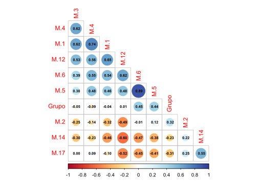
Figura 1: Correlaciones y coeficientes de correlación.
La Figura 2 es otra posigilidad para visualizar la relación entre las parejas de variables, pero además incluye páneles que visualizan la dispersión de los datos.
Código
# Gráfico de Cajas y bigotesggplot(melt(peces[,c(2,4:10,16,18,21)]), aes(x=variable, y=value)) +geom_boxplot(aes(fill=Especie)) +scale_fill_manual(values =c('#fc8d59','#ffffbf','#99d594','#377eb8','#33a02c')) +labs(x="",y="Morfometría") +facet_wrap(~ variable,scales="free") +theme_bw()
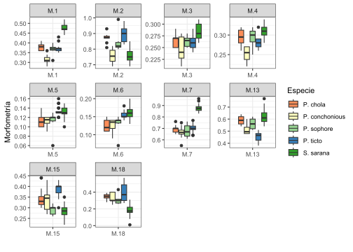
Figura 2: Correlaciones, dispersión y coeficientes de correlación.
Taller 7. ANALISIS DE CLUSTER - CLA
Cuatro pasos para el análisis de clúster
A continuación se presenta el paso a paso requerido para un análisis de cluster - cla. Cabe mencionar que es un proceso algo dispendioso en tiempo, pero que brinda la posibilidad de contar con los códigos elaborados para ajustarlos de forma eficiente a otras bases de datos que requieran a este tipo de procedimientos.
Paso 1. Distancia entre observaciones
Son muchas las distancias que pueden emplearse, pero cada una se ajusta al tipo de datos que se requieran trabajar. Para este caso se usará la distancia euclídea, debido a que se ajusta de manera apropiada a datos morfométricos.
Código
# Matriz de distanciad.euclid <-dist(peces[,c(3:21)])# round(d.euclid,1)
Paso 2. Elección del método de agrupación de mayor ajuste
Son siete las opciones de dendogramas, de las cuales solo una será la que mejor se ajusta a los datos trabajados. Para ello, primero se realizarán los dendogramas y posteriormente se escogerá l de mejor ajuste con la correlación cofenética.
2.1 Siete métodos de agrupamiento
Código
# Método 1. Vecino más cercano "Cl.single", función "hclust" y método "single"Cl.single <-hclust(d.euclid,method="single")
Código
# Método 2. Vecino más lejano "Cl.complete", función "complete" Cl.complete<-hclust(d.euclid,method="complete")
Código
# Método 3. UPGMA función "average" Unión Promedio no PonderadoCl.upgma<-hclust(d.euclid,method="average")
Código
# Método 4. UPGMC función "mcquitty" Unión Promedio PonderadoCl.upgmc<-hclust(d.euclid,method="mcquitty")
2.2 Figuras de los dendogramas con los siete métodos de agrupamiento
A continuación se realizará un panel que contenga hasta 4 figuras de dendogramas (Figura 3 y Figura 4), lo cual permite resumir al número de gráficas generadas, el comando que se empleará para incluir a varias figuras en un mismo panel grafico es grid.arrange() del paquete gridextra.
Código
f1 <-fviz_dend(Cl.single, k =5, # k grupos (opcionales)cex =0.7, # tamaño del texto de las ramasylab ="Distancia Euclídea", # Rotulo de la distanciamain ="Vecino más Cercano - Single") # Rotulo de títulof2 <-fviz_dend(Cl.complete, k =5, # k grupos (opcionales)cex =0.7, # tamaño del texto de las ramasylab ="Distancia Euclídea", # Rotulo de la distanciamain ="Vecino más Lejano - Complete") # Rotulo de títulof3 <-fviz_dend(Cl.upgma, k =5, # k grupos (opcionales)cex =0.7, # tamaño del texto de las ramasylab ="Distancia Euclídea", # Rotulo de la distanciamain ="Unión Promedio no Ponderado - upgmc") # Rotulo de títulof4 <-fviz_dend(Cl.upgmc, k =5, cex =0.7, ylab ="Distancia Euclídea", main ="Unión Promedio Ponderado - upgmc") grid.arrange(f1,f2,f3,f4, ncol =2)
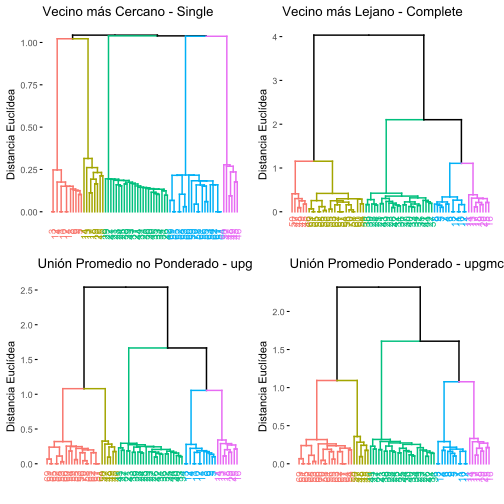
Figura 3: Cuatro dendogramas jerárquicos con la distancia euclídea.
Código
f5 <-fviz_dend(Cl.wpgma, k =5, cex =0.7, ylab ="Distancia Euclídea", main ="Unión Centroide no Ponderado - wpgma") f6 <-fviz_dend(Cl.wpgmc, k =5, cex =0.7, ylab ="Distancia Euclídea", main ="Unión Centroide Ponderado - wpgmc") f7 <-fviz_dend(Cl.ward, k =5, cex =0.7, ylab ="Distancia Euclídea", main ="Método de Ward") grid.arrange(f5,f6,f7, ncol =3)
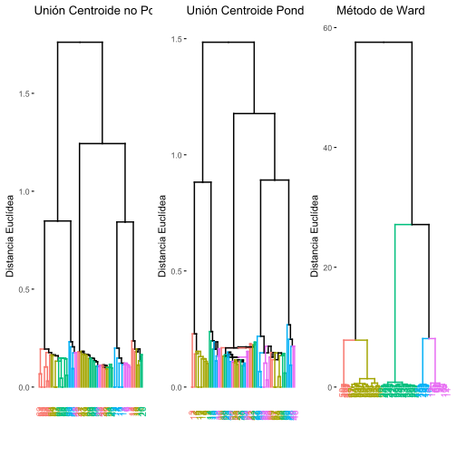
Figura 4: Tres dendogramas jerárquicos restantes, con la distancia euclídea.
2.3 Selección del mejor método de agrupamiento - Correlación Cofenética
2.3.1 Cálculo de las correlaciones cofenéticas
El método que presente la mayor correlación cofenética será el seleccionado. Para este caso se escogerá el dendograma con el método upgma, el cuál presenta un cofenético de 0.8234.
Código
# (1) Correlación cofenpetica para "single"cofenet1 <-cophenetic(Cl.single)simple =cor(d.euclid,cofenet1)simple
[1] 0.7035989
Código
# (2) Correlación cofenética para "complete"cofenet2<-cophenetic(Cl.complete)compl =cor(d.euclid,cofenet2)compl
[1] 0.8020806
Código
# (3) Correlación cofenética para "average"cofenet3<-cophenetic(Cl.upgma)upgma =cor(d.euclid,cofenet3)upgma
[1] 0.811229
Código
# (4) CCorrelación cofenética para "mcquitty"cofenet4<-cophenetic(Cl.upgmc)upgmc =cor(d.euclid,cofenet4)upgmc
[1] 0.8104369
Código
# (5) Correlación cofenética para "centroid"cofenet5<-cophenetic(Cl.wpgma)wpgma =cor(d.euclid,cofenet5)wpgma
[1] 0.8091777
Código
# (6) Correlación cofenética para "median"cofenet6<-cophenetic(Cl.wpgmc)wpgmc =cor(d.euclid,cofenet6)wpgmc
[1] 0.7905545
Código
# (7) Correlación cofenética para "ward"cofenet7<-cophenetic(Cl.ward)ward =cor(d.euclid,cofenet7)ward
[1] 0.7961924
2.3.2 Tabulación de las correlaciones cofenéticas
Los siguientes comandos permitirán organizar a los siete métodos de agrupamiento, de acuerdo a su nivel de correlación cofenética.
Código
# data frame con cofenéticoscofeneticos =data.frame(simple,compl,upgma,upgmc, wpgma,wpgmc,ward)# cofenéticos por cada métodos (Met)cofenet=data.frame(Met =1:7,Cofen=t(round(cofeneticos,3)))# tabla con orden descendente de cofenéticoscof_ordenado = cofenet[order(cofenet$Cofen, decreasing =TRUE), ]# Impresión de la tabla con los datoscof_ordenado %>%kbl(caption ="", booktabs = F,longtable = T) %>%kable_classic(full_width = F, html_font ="Cambria")
Met
Cofen
upgma
3
0.811
upgmc
4
0.810
wpgma
5
0.809
compl
2
0.802
ward
7
0.796
wpgmc
6
0.791
simple
1
0.704
Con este comando se puede exportar la tabla de cofenéticos como un archivo plano de csv.
Código
# guardar tabla como csv# write.csv2(cof_ordenado,"cofenet.csv")
2.3.3 Figuras de algunas correlaciones cofenéticas vs. matriz de distancia
A continuación se presenta una muestra de la relación entre las matrices de distancia cofenética y de distancia euclínea, que permitió seleccionar al mejor método de agrupamiento (Figura 9).
Código
# convertir matricesde distancia a vectoresd.euclid <-as.vector(d.euclid)d.cofenet1 <-as.vector(cofenet1)d.cofenet2 <-as.vector(cofenet2)d.cofenet3 <-as.vector(cofenet3)d.cofenet4 <-as.vector(cofenet4)# crear un data frame con los vectores y agregar una columna de etiquetassimple1 <-data.frame(d.euclid, d.cofenet1, d.cofenet2, d.cofenet3, d.cofenet4)# Impresión de la tabla con los datoshead(simple1) %>%kbl(caption ="", booktabs = F,longtable = T) %>%kable_classic(full_width = F, html_font ="Cambria")
d.euclid
d.cofenet1
d.cofenet2
d.cofenet3
d.cofenet4
0.1634013
0.1506652
0.1634013
0.1634013
0.1634013
0.2525866
0.2471841
0.2647640
0.2783193
0.2916546
0.2754995
0.1754993
0.3388215
0.2215997
0.2176381
0.1664332
0.1506652
0.3388215
0.1879424
0.1919003
0.2269361
0.1506652
0.3388215
0.1879424
0.2176381
0.1506652
0.1506652
0.3388215
0.1879424
0.1919003
Código
# Figuras correlaciones cofenéticas# (1) distancia cofenética para "unión simple" f1<-ggplot(simple1, aes(d.euclid,d.cofenet1))+geom_point(size=3, color="#4daf4a") +geom_smooth(method="lm",se=FALSE,color="#377eb8") +geom_smooth(method="loess",se=FALSE,color ="#e41a1c",lty=2,size=1.3) +labs(title="Unión Simple",subtitle=paste("Correlación cofenética",round(cor(d.euclid,cofenet1),4)),x="Distancia Euclidea",y="Distancia cofenética") +theme_bw()# (2) distancia cofenética para "unión completa" f2<-ggplot(simple1, aes(d.euclid,d.cofenet2))+geom_point(size=3, color="#4daf4a") +geom_smooth(method="lm",se=FALSE,color="#377eb8") +geom_smooth(method="loess",se=FALSE,color ="#e41a1c",lty=2,size=1.3) +labs(title="Unión Completa",subtitle=paste("Correlación cofenética",round(cor(d.euclid,cofenet2),4)),x="Distancia Euclidea",y="Distancia cofenética") +theme_bw()# (3) distancia cofenética para "unión upgma" f3<-ggplot(simple1, aes(d.euclid,d.cofenet3))+geom_point(size=3, color="#4daf4a") +geom_smooth(method="lm",se=FALSE,color="#377eb8") +geom_smooth(method="loess",se=FALSE,color ="#e41a1c",lty=2,size=1.3) +labs(title="Unión promedio no ponderado - upgma",subtitle=paste("Correlación cofenética",round(cor(d.euclid,cofenet3),4)),x="Distancia Euclidea",y="Distancia cofenética") +theme_bw()# (4) distancia cofenética para "unión upgmc" f4<-ggplot(simple1, aes(d.euclid,d.cofenet4))+geom_point(size=3, color="#4daf4a") +geom_smooth(method="lm",se=FALSE,color="#377eb8") +geom_smooth(method="loess",se=FALSE,color ="#e41a1c",lty=2,size=1.3) +labs(title="Unión promedio ponderado - upgmc",subtitle=paste("Correlación cofenética",round(cor(d.euclid,cofenet4),4)),x="Distancia Euclidea",y="Distancia cofenética") +theme_bw()grid.arrange(f1,f2,f3,f4, ncol =2)
Figura 5: Cuatro regresiones entre la distancia euclídea empleada y las distancias cofenéticas de cada método de agrupamiento definido.
Paso 3. Número de grupos formados
La definición de los grupos formados, representan un insumo importante de información, debido a que permiten generar los k cluster en los que se agrupan las observaciones, basado en las variables que las caracterizan. Este insumo es relevante además, como paso previo a otras técnicas que requieren los grupos definidos a priori, como los análisis discriminantes lineales (lda) o los análisis de varianza multivariados (manovas), de igual forma, a partir de los grupos se pueden responder hipótesis enfocadas en las variaciones que pueden presentar las variables a lo largo de gradientes discretos o en cluster.
Opción 1. Niveles de Fusión.
La figura de niveles de fusión es una de las más utilizadas para la generación de grupos o de cluster, debido a la sencillez del componente gráfico, en el cual se definen los cluster o grupos (eje Y), dependiendo del escalón de mayor amplitud o distancia horizontal (eje X). En la Figura 6 se observa que la mayor amplitud se presenta en 2 k cluster, por lo cual, el dendograma seleccionado en el paso anterior se puede clasificar en dos grupos de observaciones.
Código
# Base de variables a relacionar (amb)amb <- peces[,c(3:9,15,17,20)]
Código
# Data.frame con los datos de altura, k y número de clusterf1 <-data.frame(h = Cl.upgma$height, k =nrow(amb):2, cluster =nrow(amb):2)
Código
# Crear el gráfico de dispersión y agregar etiquetas de textoggplot(f1, aes(x = h, y = k, label = cluster)) +geom_point(color ="grey") +geom_text(color ="red", size =3, vjust =-0.5) +geom_step(color ="grey", direction ="vh") +# Personalizar el gráfico con títulos, etiquetas de ejes y paleta de coloresggtitle("Niveles de Fusión - Distancia Euclídea - UPGMA") +ylab("k (Número de Cluster)") +xlab("h (Altura del Nodo)") +scale_color_manual(values =c("grey", "red")) +theme(axis.title =element_text(size =16)) +theme_classic()
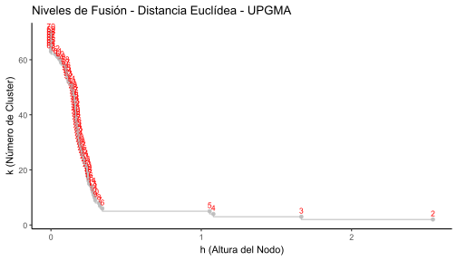
Figura 6: Cuatro regresiones entre la distancia euclídea empleada y las distancias cofenéticas de cada método de agrupamiento definido.
Opción 2. Número optimo de clusters de acuerdo al Ancho de silueta. Índice de calidad de Rousseeuw
La amplitud de silueta es de las opciones más usadas para definir al número de k cluster o grupos del dendograma realizado. En este ejercicio también se define a dos grupos. En caso que los resultados de esta técnica sean diferentes a la anterior, se suele decidir por esta, debido a su mayor grado de precisión.
Código
# 1. Crear un vector vacío (amb.vacio) con asw valoresamb.vacio <-numeric(nrow(amb))# 2. Silueta "sil" for(k in2: (nrow(amb)-1)){ sil <-silhouette(cutree(Cl.upgma,k=k),d.euclid) amb.vacio[k]<-summary(sil)$avg.width} # 3. Mejor o mayor amplitud de silueta (2 particiones)k.mejor <-which.max(amb.vacio)k.mejor
Código
# Grafica de siluetaplot(1:nrow(amb),amb.vacio,type="h",main="Silueta-Número Óptimo de Clusters", xlab="(Número de grupos)",ylab="Amplitud promedio de silueta")axis(1,k.mejor,paste("optimum",k.mejor,sep="\n"),col="red",font=2,col.axis="red")points(k.mejor,max(amb.vacio),pch=16,col="red",cex=1.5)cat("","Silueta-Número óptimo de Clusters k=",k.mejor,"\n","Con una aplitud promedio de silueta",max(amb.vacio),"\n")
3.1 Figura del dendograma jerárquico final
La Figura 7 muestra la manera en la que se organizan las observaciones en los dos grupos formados (ramas rojas y azules) devido a la naturaleza de las variables fisicoquímicas que las caracterizar.
Código
# Dendograma final fviz_dend(Cl.upgma, k =3, # k gruposcex =0.9, # tamaño del texto de las observacionesylab ="Distancia Euclídea", # Rotulo de la distanciamain ="Unión Promedio no Ponderada (UPGMA)", # Rotulo de títulolower_rect =0, # Inicio de los rectángulos en cerok_colors =c("#00AFBB","#FC4E07"),color_labels_by_k =TRUE, # Colores para cada gruporect =TRUE) # Rectángulos de cada grupo
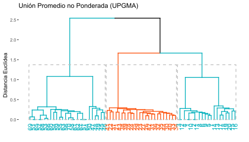
Figura 7: Dendograma jerárquico final con los dos grupos asignados.
Vale la pena mencionar que estos análisis son importantes cuando se cuenta con pocas observaciones (ramas del dendograma), en el caso contrario, es preferible utilizar dendogramas no jerarquicos como el k-meas, el cual fue descrito en uno de los complementos del PCA y se retoma a continuación.
3.2 Figura del dendograma no jerárquico final
Agrupamiento elegido en el paso 2 (upgma)
Código
# Matriz de distanciad.euclid <-dist(amb)# Método 3. UPGMA función "average" Unión Promedio no PonderadoCl.upgma<-hclust(d.euclid,method="average")
Generación de la variable agrupadora (gr)
Código
# Variable agrupadora con k=3 clústergrp <-cutree(Cl.upgma, k =3) # Grupos generados "grp" grl <-levels(factor(grp)) # Rotulos de los grupos formados
Este es un paso opcional en caso que se requiera insertar la nueva variable agrupadora a la base de datos en revisión.
Código
# Incluir la variable agrupadora en la base de datosdatos.1=data.frame(grp,amb) # Nuevo dataframe con la variable agrupadora (gr)head (datos.1)
La Figura 8 es la forma no jerárquica de presentar los resultados del cluster definido por el método de agrupamiento upgma.
Código
fviz_cluster(list(data = datos.1[,-1], cluster = grp),palette =c("#2E9FDF", "#FC4E07", "#2E9FDF"), # Colores para cada grupoellipse.type ="confidence", # Elipsesrepel =TRUE, # Elimina solapamiento de observacionesshow.clust.cent =FALSE, # Muestra a los clúster centradosggtheme =theme_bw()) # Tipo de fondo tomado de ggplot2
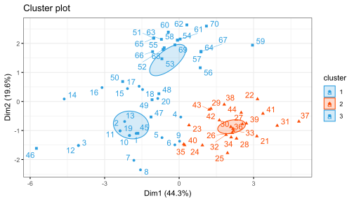
Figura 8: Dendograma no jerárquico final con los dos grupos asignados.
Una pregunta interesante que se podría resolver, sería valorar si las diferencias entre los dos grupos de observaciones formadas es estadísticamente significativa, para lo cual se debe aplicar un análisis de varianza multivariado (manova).
Paso 4. Variables de mayor contrinución a la clasificación
A continuación se realizan diferentes opciones de mapas de calor (Figura 9, Figura 10), para identifiar a las variables con mayor relevancia en la clasificación realizada anteriormente en el dendograma seleccionado. Este paso es relevante cuando se quiere ponderar o seleecionar a las variables que aportan al análisis, resumiento de esta forma, la dimensionalidad del problema (número de variables).
Código
amb <- peces[,c(3:9,15,17,20)]amb1 <-as.matrix(amb)
Código
# Opción 1. Mapa de calor con paquete "stats"hv <-heatmap(amb1, margins=c(7,6), distfun = dist,xlab ="Variables Morfométricas",ylab="Peces", main ="Clasificación de Peces",scale ="row") # Estandariza variables diferentes.
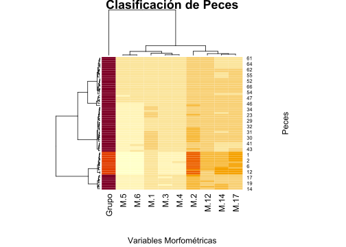
Figura 9: Mapa de calor que define en color rojo a las variables de mayor aporte a la clasificación realizada.
El siguiente mapa de calor (Figura 10) incorpora a la distancia euclídea utilizada y el método de agrupamiento seleccionado (upgma).
Código
# Opción 2. Mapa de calor con paquete "stats"hclust.fq <-function(amb1) hclust(amb1, method="average") # Inserción de agrupación UPGMAheatmap.2(amb1, # Base de datos en formato matricialmargins=c(7,7), # Margenes de la figurascale ="row", # Estandariza variables diferentes.col =bluered(100), # Colores del mapa de calorxlab ="Variables Mrfométricas",ylab="Peces", main ="Clasificación de Peces",trace ="none", density.info ="none",distfun = dist, # Se puede usar vegdist de "vegan" hclustfun=hclust.fq) # Agrupamiento UPGMA
Figura 10: Mapa de calor que define en color rojo a las variables de mayor aporte a la clasificación realizada.
Taller 8.1 ANÁLISIS DISCRIMINANTE LINEAL - LDA
Objetivo de la actividad:
La base de datos que se utilizará es la de medidas morfométricas de peces de un estudio realizado con peces de la india por Gupta et al. (2018)Articulo fuente en los que se validó la taxonomía de peces de la subfamilia Barbinae, utilizando 19 variables morfométricas y 19 variables meristicas, correspondientes a 5 Especie de la familia en mención.
Cargar o importar la base de datos
La presente base de datos se encuentra en formato plano de csv, presenta una columna Especie que agrupa a las 5 Especie de peces, otra columna Grupo, que asigna un número a cada especie y posteriormente a las 19 variables morfométricas y 10 variables meristicas, de las cuales se selecionarán las 19 morfométricas para este ejercicio M.1 a M.19.
Código
# Base de datospeces<-read_xlsx("datos.xlsx")# names(peces)
Exploración de los datos
La Figura 11 permite visualizar la resolución de cada variable para diferenciar o discriminar a las diferentes especies de peces. Esta figura sirve de insumo para descartar aquellas variables con poco potencial de discriminación de las especies.
Código
# Figuras multivariadas de Cajas y bigotesggplot(melt(peces[,c(2,4:10,16,18,21)]), aes(x=variable, y=value)) +geom_boxplot(aes(fill=Especie)) +scale_fill_manual(values =c('#fc8d59','#ffffbf','#99d594','#377eb8','#33a02c')) +labs(x="",y="Morfometría") +facet_wrap(~ variable,scales="free") +theme_bw()
Figura 11: Variación en la morfometría de los peces, de acuerdo a cada una de las variables seleccionadas.
Mapa de Calor
El siguiente mapa de calor también permite visualizar a la resolución de las variables morfométricas para diferenciar a las especies de peces, las cuales representan a los grupos en comparación. Con los siguientes comandos se calculará una tabla que resume a los promedios de las 10 variables morfométricas para cada especie evaluada.
Código
# Extracción de los promedios de las variables para cada especielibrary(tidyverse)promedios <- peces %>%subset(select =c("Especie","M.1","M.2","M.3","M.4","M.5","M.6","M.7","M.13","M.15","M.18")) %>%na.omit() %>%group_by(Especie) %>%summarize(across(everything(), mean))promedios <-data.frame(promedios) # Guardar promedios como dataframe# promedios
A continuación se combierte el dataframe a formato matricial - promedios2, para poder ser graficado en el mapa de calor.
Código
# Seleccionar columnas de 2 a 10 del data frame peces1 y convertirlas en matrizpromedios2 <- promedios %>%subset(select =c(2:11)) %>%as.matrix()round(promedios2,2)
Ahora se incluyen los nombres de las especies a la matriz promedios2.
Código
# Asignar los valores de la primera columna de peces1 como nombres de fila en la matriz peces2rownames(promedios2) <- promedios[,1]
La Figura 12 incorpora elementos adicionales como al método de agrupamiento upgma, asumiendo que puede ser el que mejor se ajusta a los datos de este ejercicio.
Código
# Opción 2. Mapa de calor con paquete "stats"hclust.fq <-function(promedios2) hclust(promedios2, method="average") # Inserción de UPGMA
Código
heatmap.2(promedios2, # Base de datos en formato matricialmargins=c(5,12), # Margenes de la figurascale ="row", # Estandariza variables diferentes.col =bluered(100), # Colores del mapa de calorxlab ="Variables morfométricas", ylab="Especie de Peces", main ="Clasificación de Peces", trace ="none", density.info ="none",distfun = dist, # Se puede usar vegdist de "vegan" hclustfun=hclust.fq) # Agrupamiento UPGMA
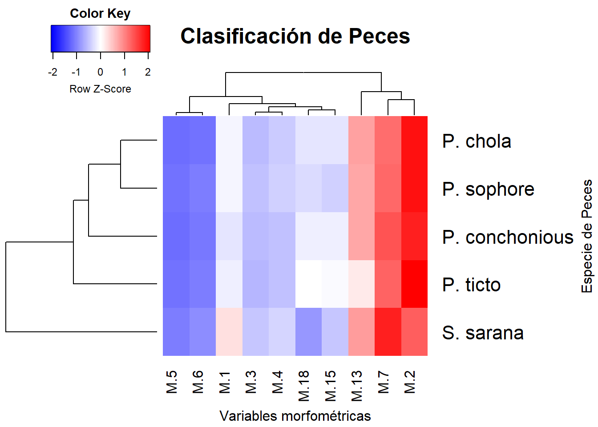
Figura 12: Mapa de calor que relaciona a las variables morfométricas y a las especies de peces.
División de los datos en conjuntos de entrenamiento y prueba: Se recomienda estandarizar o normalizar las variables predictoras (morfométricas) para que no haya un efecto de la escala. Algunos autores recomiendan dividir los datos de entrenamiento en un 60% y los datos de la prueba en 40% (FINNSTATS) o datos de entrenamiento en un 80% y los de prueba en un 20%. (STHDA). Se utilizará la segunda propuesta para este ejercicio.
1. División de los datos en conjuntos de entrenamiento y prueba
Código
# # Dividir los datos en entrenamiento (80%) y conjunto de prueba (20%)set.seed(123)muestra.entrenamiento <- peces$Especie %>%createDataPartition(p =0.8, list =FALSE)entrenamiento <- peces[muestra.entrenamiento, ]prueba <- peces[-muestra.entrenamiento, ]
2. Normalizar los datos. Las variables categóricas (Especie) se ignoran automáticamente.
Código
# Estimar los parámetros de preprocesamientopreprocesamiento <- entrenamiento %>%preProcess(method =c("center", "scale"))# Transformar los datos usando los parámetros estimados.entrenam.transf <- preprocesamiento %>%predict(entrenamiento)prueba.transf <- preprocesamiento %>%predict(prueba)
Tres pasos para la realización del discriminante lineal - LDA
Paso 1. Pruebas de supuestos
Para que el análisis discriminante lineal sea considerado como un modelo lineal, debe cumplir con los supuestos de normalidad multivariada y de homogeneidad de covarianzas. Para el caso del presente ejercicio, dichos supuestos no alcanzan a cumplirse con los diagnosticos utilizados (valor p < 0.05), motivo por el cual, el lda de este ejercicio será tomado como una técnica de exploración moltivariada para saber que tan bien discriminados quedan los individuos de cada especie, basado en las 10 variables morfomètricas seleccionadas.
1.1 Supuesto de normalidad
El supuesto de normalidad multivariada será evaluado con el paquete mvnormtest, el cual utiliza el estadìstico de Shapiro Wilks Multivariado. Para ello se realizarà esta prueba en cada uno de los grupos o especies en comparación.
Código
# Diagnóstico de normalidad por cada tipo de Especielibrary(mvnormtest)
Los siguientes generan los dataframes de cada especie con las 10 variables seleccionadas, convirtiendola ademàs en formato matricial.
Código
# Dataframe por cada especie# 1. datos de P. chola.P.chola <- entrenam.transf %>%filter(Especie =="P. chola") %>%subset(select =c("M.1","M.2","M.3","M.4","M.5","M.6","M.7","M.13","M.15","M.18")) %>%as.matrix()# 2. datos de P. conchonious.P.concho <- entrenam.transf %>%filter(Especie =="P. conchonious") %>%subset(select =c("M.1","M.2","M.3","M.4","M.5","M.6","M.7","M.13","M.15","M.18")) %>%as.matrix() # 3. datos de P. sophore.P.sophore <- entrenam.transf %>%filter(Especie =="P. sophore") %>%subset(select =c("M.1","M.2","M.3","M.4","M.5","M.6","M.7","M.13","M.15","M.18")) %>%as.matrix() # 4. datos de P. ticto.P.ticto <- entrenam.transf %>%filter(Especie =="P. ticto") %>%subset(select =c("M.1","M.2","M.3","M.4","M.5","M.6","M.7","M.13","M.15","M.18")) %>%as.matrix() # 5. datos de P. ticto.S.sarana <- entrenam.transf %>%filter(Especie =="S. sarana") %>%subset(select =c("M.1","M.2","M.3","M.4","M.5","M.6","M.7","M.13","M.15","M.18")) %>%as.matrix()
Vale la pena resaltar que los datos de las especies P. chola y P. sophore, son singulares, por lo cual no puede calcularse su supuesto de normalidad multivariada. Con el objeto de continuar en el ejercicio, las matrices que representan a las especies en menciòn, seràn desactivadas con #.
Código
# Prueba de normalidad para cada especienorm1 <-mshapiro.test(t(P.chola)) # Matriz singular#norm2 <- mshapiro.test(t(P.concho))#norm3 <- mshapiro.test(t(P.sophore)) # Matriz singularnorm4 <-mshapiro.test(t(P.ticto))norm5 <-mshapiro.test(t(S.sarana))
Otra opción de normalidad
Código
# 1. datos de P. chola.#P.chola <- entrenam.transf %>% # filter(Especie == "P. chola") %>% # subset(select = c("M.1","M.2","M.3","M.4","M.5",# "M.6","M.7","M.13","M.15","M.18")) %>%# as.data.frame()#norm1 <- mardia(P.chola)#norm1 %>% #flextable()
A continuación se resume el resultado de los tres diagnósticos de normalidad multivariada realizados. Vale la pena mencionar que ninguna especie cumple con dicho supuesto estadóstico (valores p < 0.05), aunque existe la posibilidad de probar con alguna transformación.
Código
# Resumen de el diagnóstico de normalidad(normalidad =data.frame(Norm.chola = norm1$p.value,Norm.ticto = norm4$p.value,Norm.sarana = norm5$p.value))
La prueba de homogeneidad de covarianza o esfericidad, corresponde al segundo supuesto del análisis discriminante lineal, se utilizará la función betadisper, la cual es complementada por dos análisis de varianza, los cuales definirán si el supuesto logra ser cumplido.
Código
# Pruebas de Homogeneidad de covarianzas paquete "vegan"peces.d <-dist(entrenam.transf[,c(3:9,15,17,20)]) # Matriz de distanciaspeces.homoge <-betadisper(peces.d, entrenam.transf$Especie) # Permutest
Con la siguiente anova se obtiene un valor p de 0.27, lo cual indica que si se cumple el supuesto de homogeneidad de covarianzas (valor p > 0.05).
Código
# 1) Prueba con anova permutacionalanova(peces.homoge)
Analysis of Variance Table
Response: Distances
Df Sum Sq Mean Sq F value Pr(>F)
Groups 4 1.1817 0.29543 0.605 0.6607
Residuals 53 25.8808 0.48832
Con el permutest se obtiene un valor p de 0.28*, lo cual indica que también se cumple el supuesto de homogeneidad de covarianzas (valor p > 0.05).
Código
# 2) Prueba permutacionalpermutest(peces.homoge) # Se cumple el supuesto de homogeneidad
Permutation test for homogeneity of multivariate dispersions
Permutation: free
Number of permutations: 999
Response: Distances
Df Sum Sq Mean Sq F N.Perm Pr(>F)
Groups 4 1.1817 0.29543 0.605 999 0.669
Residuals 53 25.8808 0.48832
Paso 2. Análisis Discriminante Lineal de Fisher - LDA
A continuación, se realizará el lda, que permitirá generar definir al nivel de discriminación de cada grupo o especie de pez. Se presentan algunas opciones gráficas con el procedimiento general y con el análisis discriminate canónico (dca)
P. chola P. conchonious P. sophore P. ticto S. sarana
0.17 0.12 0.09 0.28 0.34
“Prior probabilities of groups” corresponde a la probabilidad de clasificación para cada grupo que dependerá del número de peces que lo conforman, aqueyas especies con mayor número de individuos censados, presentarán mayor probabilidad de discriminación.
Prbabilidad de clasificar indv. de los cinco grupos: P. chola P. conchonious P. sophore P. ticto S. sarana 0.17 0.11 0.08 0.28 0.34
Código
# Insumos del AD # summary(dis)
A continuación se presentan los promedios de cada especie por cada variable morfométrica seleccionada para el análisis.
Código
#Grupos de medias para las 4 variables round(dis$means,2)
Los autovalores son los que permiten definir las coordenadas de las variables para cada función canónica (eje o dimensión del lda), para la grafica del discriminante, se utilizarán las funciones LD1 y LD2, como ejes x y y respectivamente (ver Figura 13).
Código
# Autovalores estandarizados (pesos de las variables en cada eje)round((Cs <- dis$scaling),2)
La siguiente tabla es conocida como tabla de contingencia la cual realiza una validación cruzada entre las especies (filas) y los grupos discriminados por el lda (columnas). De acuerdo a esta tabla solo P. sophore no discrimina a todos sus individuos en su grupo, debido a que hay dos peces que presentan una morfometría más similar a P. chola.
Código
# Evaluación de desempeño del AD (método 1)attach(entrenam.transf)group<-predict(dis,method="plug-in")$class(tabla<-table(Especie,group))
group
Especie P. chola P. conchonious P. sophore P. ticto S. sarana
P. chola 10 0 0 0 0
P. conchonious 0 7 0 0 0
P. sophore 1 0 4 0 0
P. ticto 0 0 0 16 0
S. sarana 0 0 0 0 20
La siguiente tabla realiza una validación en términos porcentuales, definiendo que en el caso de P. sophore el 64% de sus individuos discriminan correctamente en su especie. El resto de especies presentan una discriminación completa en su grupo.
Código
# Porcentaje de clasificación correcta round(diag(prop.table(tabla, 1)),2)*100
P. chola P. conchonious P. sophore P. ticto S. sarana
100 100 80 100 100
La siguiente validación realizada por el método de Jacknife, presenta menos resolución de discriminación que la anterior, por lo cual no será tenida en cuenta en este ejercicio.
Código
# M?todo 2: con clasifiación basada en jacknife (validación cruzada dejando uno afuera)dis.jac <-lda(Especie ~ M.1+M.2+M.3+M.4+M.5+M.6+M.7+M.13+M.15+M.18,data=entrenam.transf, CV=TRUE)
Código
# Número y proporciones de clasificación correctaclases.jac <- dis.jac$classtabla.jac <-table(Especie, clases.jac)tabla.jac
clases.jac
Especie P. chola P. conchonious P. sophore P. ticto S. sarana
P. chola 9 0 1 0 0
P. conchonious 0 7 0 0 0
P. sophore 3 0 2 0 0
P. ticto 0 0 0 16 0
S. sarana 0 0 0 0 20
P. chola P. conchonious P. sophore P. ticto S. sarana
90 100 40 100 100
Paso 3. Visualización grafica del LDA
** 3.1 Gráfico de elipses.**
A continuación se realizará el componente grafico del lda, el cual inicia con una figura que definirá unas elipses, las cuales relacionan a los individuos de cada especie y cuyo solapamiento definirá el nivel de relación entre estas.
Código
# Escores o coordenadas de las observaciones en cada eje can?nicoFp <-predict(dis)$x
Código
# Grupos asignados por el ADgroup<-predict(dis,method="plug-in")$class
Código
# Coordenadas y grupos asignadospeces.coord=data.frame(Especie=group,Fp)
La Figura 13 demuestra que si bien de presenta una buena discriminación de las especies de peces, 4 de las 5 evaluadas presentan cierta relación, definida por el solapamiento de sus elipses.
Código
# Figura del LDAattach(entrenam.transf)scatterplot(LD2~LD1 | Especie, data=peces.coord,reg.line=FALSE, smooth=F, spread=F,span=1,grid=F,legend=list(coords="bottom"), ellipse=T,font.lab=2, pch=c(15,16,17,18,19),col=c('#fc8d59','#e41a1c','#984ea3','#377eb8','#33a02c'),main="Análisis discriminante",font.main=2,cex.main=2,cex.lab=1.5,xlab="Eje1", ylab="Eje2")
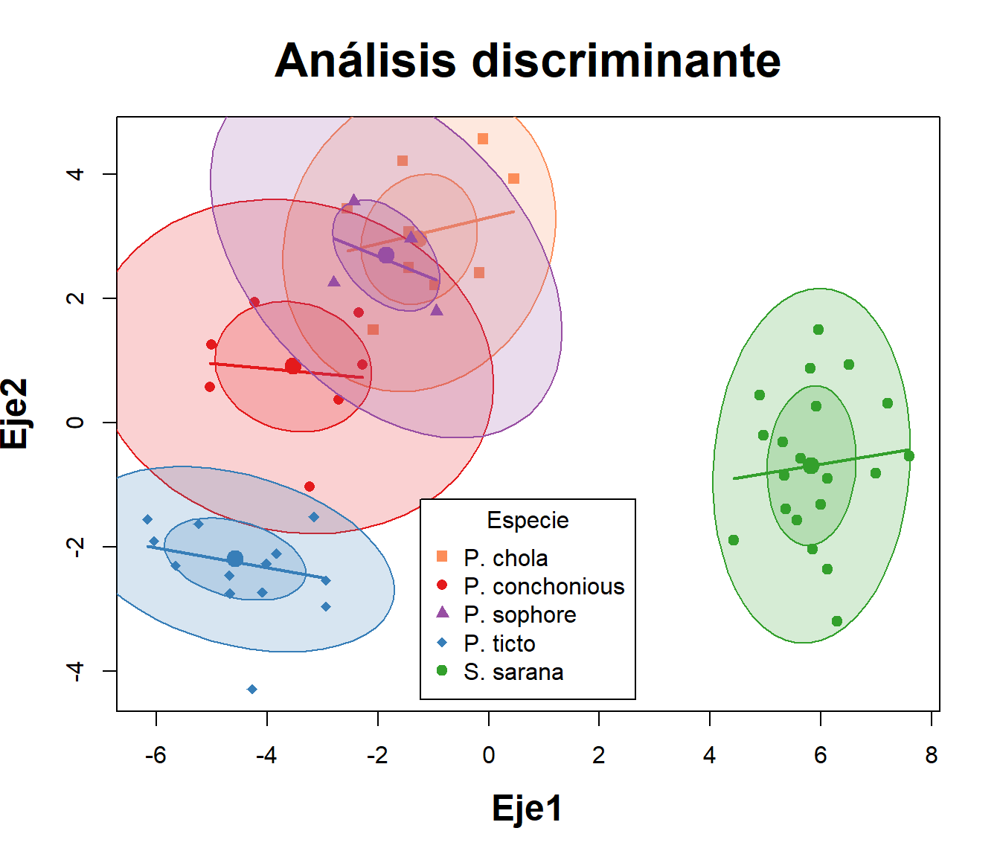
Figura 13: Mapa de calor que relaciona a las variables morfométricas y a las especies de peces.
Código
# Figura 2 del LDA# Escores o coordenadas de las observaciones en cada eje can?nicoFp <-predict(dis)$x#lda <-cbind(entrenam.transf, Fp)ggplot(lda, aes(LD1, LD2)) +geom_point(aes(color = Especie), size=3) +theme_bw() +theme(panel.grid=element_blank())
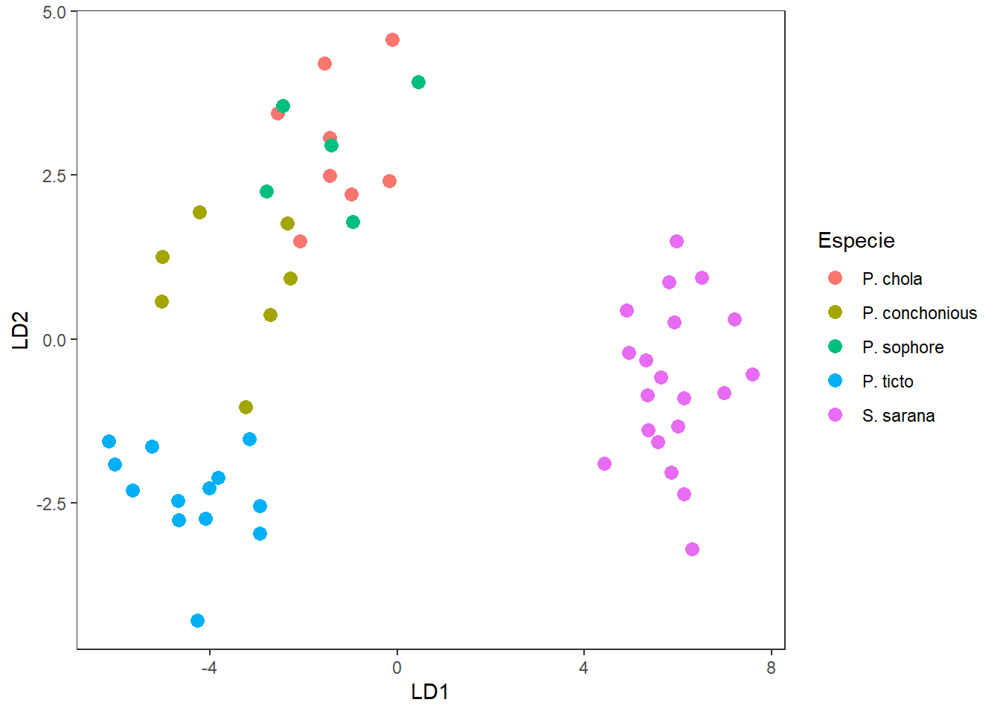
Código
# Figura 3 del LDAggord(dis, entrenam.transf$Especie) +geom_hline(yintercept=0,linetype=3,size=1) +geom_vline(xintercept=0,linetype=3,size=1)+theme_bw() +theme(panel.grid=element_blank())
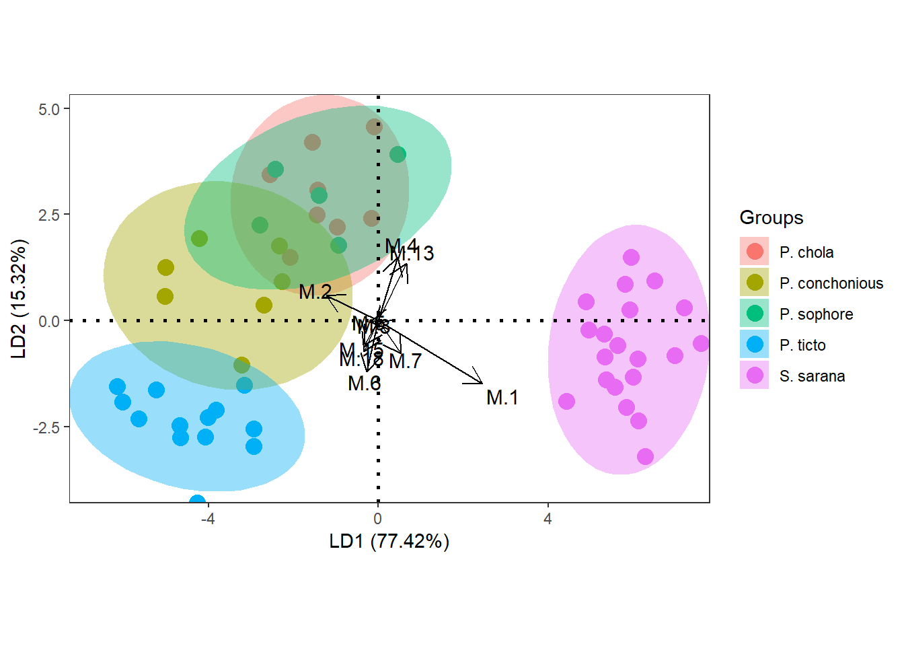
Código
# Coordenadas de los sitiosFp <-predict(dis)$x# Grupos group<-predict(dis,method="plug-in")$class
Código
# 1) Coordenadas de los sitios y el factor (coord.sit)# Dataframecoord.sit <-as.data.frame(predict(dis)$x[,1:2]) # Coordenadas de los sitioscoord.sit$sitio <-rownames(coord.sit) # Crear una columna con nombres de los sitioscoord.sit$grp <- group # Adicionar columna de grupos por Tributariohead(coord.sit) # vista resumida de las coordenadas de sitios
LD1 LD2 sitio grp
1 -0.9746434 2.212049 1 P. chola
2 -2.5524750 3.445299 2 P. chola
3 -2.0820106 1.492841 3 P. chola
4 -1.4445957 2.490105 4 P. chola
5 -1.4360728 3.073528 5 P. chola
6 -0.1018922 4.563710 6 P. chola
Código
# 2) Coordenadasde las variables (coord.var) coord.var <-as.data.frame(round((Cs <- dis$scaling),2)[,1:2]) # Dos primeros ejesvariables <-rownames(coord.var)coord.var <-cbind(coord.var, variables = variables)head(coord.var)
# 1) Figura con vectores de variables morfométricasggplot() +# Sitiosgeom_text_repel(data = coord.sit,aes(LD1,LD2,label=row.names(coord.sit)),size=4)+# Muestra el cuadro de la figurageom_point(data = coord.sit,aes(LD1,LD2,colour=grp),size=4)+scale_shape_manual(values =c(21:25))+# Variables morfométricas geom_segment(data = coord.var,aes(x =0, y =0, xend = LD1*2, yend = LD2*2), arrow =arrow(angle=22.5,length =unit(0.25,"cm"),type ="closed"),linetype=1, size=0.6,colour ="red")+geom_text_repel(data = coord.var,aes(LD1*2,LD2*2,label=variables),colour ="red")+# Grupos (Especies de peces)geom_mark_ellipse(data=coord.sit,aes(x=LD1,y=LD2,fill=grp),alpha=0.30) +geom_hline(yintercept=0,linetype=3,size=1) +geom_vline(xintercept=0,linetype=3,size=1)+guides(shape=guide_legend(title=NULL,color="black"),fill=guide_legend(title=NULL))+theme_bw()+theme(panel.grid=element_blank())
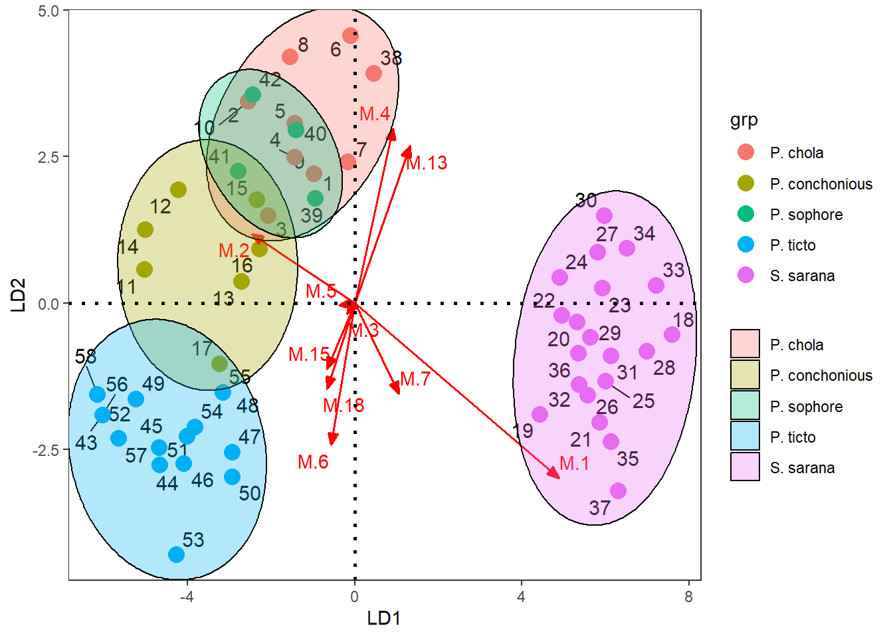
Taller 8.2 ANÁLISIS DISCRIMINANTE CANÓNICO - DCA
El siguiente análisis permite visualizar la influencia de cada variable morfométrica en la separación de los grupos de especies y selecciona a las variables que presentan más influencia en la discriminación de los peces.
A continuación se presenta la Figura 14 que define a la discriminación de las especies con un solo eje canónico el cual explica el 81.8% de la variación de los datos. La orientación de los vectores (variables morfométricas), en relación a las cajas, indica su importancia para discriminar a cada especie o grupo en comparación.
Figura 14: Mapa de calor que relaciona a las variables morfométricas y a las especies de peces.
En el siguiente enlace se puede obtener un caso aplicado con este tipo de análisis multivariados: Aguirre et al. (2015). Ver la figura 2 del manuscrito en mención.
Taller 9. ANÁLISIS DE VARIANZA MULTIVARIADO - MANOVAS
Paso 1. Pruebas de supuestos
Para que el análisis de varianza multivariado - manova sea considerado como un modelo lineal, debe cumplir con los supuestos de normalidad multivariada, de homogeneidad de covarianzas y de independencia. Para el caso del presente ejercicio, los dos primeros supuestos no alcanzan a cumplirse con los diagnosticos utilizados (valor p < 0.05), motivo por el cual, el manova de este ejercicio será tomado como una técnica de exploración multivariada para evaluar las diferencias en las 5 especies, basado en las 10 variables morfomètricas seleccionadas.En el siguiente ejercicio se realizarán análisis de varianza no paramétricos pemanovas, que permiten probar hipótesis sin el cumplimiento de ls dos primeros supuestos, por lo cual serán los diseños multivariados más apropiados para esta base de datos.
1.1 Supuesto de normalidad
El supuesto de normalidad multivariada será evaluado con el paquete mvnormtest, el cual utiliza el estadìstico de Shapiro Wilks Multivariado. Para ello se realizarà esta prueba en cada uno de los grupos o especies en comparación. NOTA: Este supuesto también será evaluado con los residuales del manova, posterior a su ejecución.
Código
# Diagnóstico de normalidad por cada tipo de Especielibrary(mvnormtest)
Los siguientes generan los dataframes de cada especie con las 10 variables seleccionadas, convirtiendola ademàs en formato matricial.
Código
# Dataframe por cada especie# datos de P. chola.P.chola <- peces %>%filter(Especie =="P. chola") %>%subset(select =c("M.1","M.2","M.3","M.4","M.5","M.6","M.7","M.13","M.15","M.18")) %>%as.matrix()# datos de P. conchonious.P.concho <- peces %>%filter(Especie =="P. conchonious") %>%subset(select =c("M.1","M.2","M.3","M.4","M.5","M.6","M.7","M.13","M.15","M.18")) %>%as.matrix() # datos de P. sophore.P.sophore <- peces %>%filter(Especie =="P. sophore") %>%subset(select =c("M.1","M.2","M.3","M.4","M.5","M.6","M.7","M.13","M.15","M.18")) %>%as.matrix() # datos de P. ticto.P.ticto <- peces %>%filter(Especie =="P. ticto") %>%subset(select =c("M.1","M.2","M.3","M.4","M.5","M.6","M.7","M.13","M.15","M.18")) %>%as.matrix() # datos de P. ticto.S.sarana <- peces %>%filter(Especie =="S. sarana") %>%subset(select =c("M.1","M.2","M.3","M.4","M.5","M.6","M.7","M.13","M.15","M.18")) %>%as.matrix()
Vale la pena resaltar que los datos de las especies P. chola y P. sophore, son singulares, por lo cual no puede calcularse su supuesto de normalidad multivariada. Con el objeto de continuar en el ejercicio, las matrices que representan a las especies en menciòn, seràn desactivadas con #.
Código
# Prueba de normalidad para cada especielibrary(mvnormtest)# norm1 <- mshapiro.test(t(P.chola)) # Matriz singularnorm2 <-mshapiro.test(t(P.concho))# norm3 <- mshapiro.test(t(P.sophore)) # Matriz singularnorm4 <-mshapiro.test(t(P.ticto))norm5 <-mshapiro.test(t(S.sarana))
A continuación se resume el resultado de los tres diagnósticos de normalidad multivariada realizados. Vale la pena mencionar que ninguna especie cumple con dicho supuesto estadóstico (valores p < 0.05), aunque existe la posibilidad de probar con alguna transformación.
Código
# Resumen de el diagnóstico de normalidad(normalidad =data.frame(Norm.P.concho = norm2$p.value,Norm.ticto = norm4$p.value,Norm.sarana = norm5$p.value))
La prueba de homogeneidad de covarianza o esfericidad, corresponde al segundo supuesto del análisis discriminante lineal, se utilizará la función betadisper, la cual es complementada por dos análisis de varianza, los cuales definirán si el supuesto logra ser cumplido.
Código
# Pruebas de Homogeneidad de covarianzas paquete "vegan"library(vegan)peces.d <-dist(peces[,c(3:9,15,17,20)]) # Matriz de distanciaspeces.homoge <-betadisper(peces.d, peces$Especie) # Permutest
Con la siguiente anova se obtiene un valor p de 0.016*, lo cual indica que no se cumple el supuesto de homogeneidad de covarianzas (valor p < 0.05).
Código
# 1) Prueba con anova permutacionalanova(peces.homoge)
Analysis of Variance Table
Response: Distances
Df Sum Sq Mean Sq F value Pr(>F)
Groups 4 0.005359 0.0013399 0.9084 0.4644
Residuals 65 0.095878 0.0014750
Con el permutest se obtiene un valor p de 0.015*, lo cual indica que tampoco se cumple el supuesto de homogeneidad de covarianzas (valor p < 0.05).
Código
# 2) Prueba permutacionalpermutest(peces.homoge) # Se cumple el supuesto de homogeneidad
Permutation test for homogeneity of multivariate dispersions
Permutation: free
Number of permutations: 999
Response: Distances
Df Sum Sq Mean Sq F N.Perm Pr(>F)
Groups 4 0.005359 0.0013399 0.9084 999 0.465
Residuals 65 0.095878 0.0014750
Paso 2. Análisis de Varinaza Multivariado - MANOVA
El manova, por ser un modelo lineal especial, requiere que se indiquen las variables continuas (variables Xi) y la variable cualitativa o categórica (variable Yi), que para este caso es la Especie.
Código
# Manova (variables efecto: 10 morfológicas y la respuesta: Especie)attach(peces)peces.manova<-manova(cbind(M.1,M.2,M.3,M.4,M.5,M.6,M.7,M.13,M.15,M.18)~Especie)
A continuación se presentará la tabla del manova para las tres primeras variables morfométricas. Para visualizar todos los resultados de este insumo, es necesario colocar solo: summary.aov(peces.manova). Para este caso se observa que todas las variables efecto o morfológicas, tienen un efecto muy significativo (valor p <<0.01) en la diferenciaciación de los 5 grupos o especies de peces.
Código
# respuesta de la variable M.1summary.aov(peces.manova)$" Response M.1"
Df Sum Sq Mean Sq F value Pr(>F)
Especie 4 0.221052 0.055263 127.36 < 2.2e-16 ***
Residuals 65 0.028205 0.000434
---
Signif. codes: 0 '***' 0.001 '**' 0.01 '*' 0.05 '.' 0.1 ' ' 1
Código
# respuesta de la variable M.2summary.aov(peces.manova)$" Response M.2"
Df Sum Sq Mean Sq F value Pr(>F)
Especie 4 0.28343 0.070857 34.76 1.654e-15 ***
Residuals 65 0.13250 0.002038
---
Signif. codes: 0 '***' 0.001 '**' 0.01 '*' 0.05 '.' 0.1 ' ' 1
Código
# respuesta de la variable M.3summary.aov(peces.manova)$" Response M.3"
Df Sum Sq Mean Sq F value Pr(>F)
Especie 4 0.010738 0.00268443 10.486 1.29e-06 ***
Residuals 65 0.016641 0.00025601
---
Signif. codes: 0 '***' 0.001 '**' 0.01 '*' 0.05 '.' 0.1 ' ' 1
A continuación se presentan los cuatro tipos de MANOVAS, con la diferencia de que Hotelling puede utilizarse sin el cumplimiento del supuesto de normalidad multivariada (pero deben cumplirse los otros supuestos como el de la homogeneidad y el de la independencia). Para este caso los 4 estadísticos muestran altas diferencias entre algunos de los grupos representados por las cinco especies, posiblemente por el efecto de P. sarana, que al ser de un género diferente, presenta marcadas diferencias morfológicas (ver Figura 15).
Código
# Tipos de MANOVA para evaluar si hay diferencias en los promedios de cada Especie summary(peces.manova,test="Pillai")
Df Pillai approx F num Df den Df Pr(>F)
Especie 4 2.513 9.9711 40 236 < 2.2e-16 ***
Residuals 65
---
Signif. codes: 0 '***' 0.001 '**' 0.01 '*' 0.05 '.' 0.1 ' ' 1
Código
summary(peces.manova,test="Wilks")
Df Wilks approx F num Df den Df Pr(>F)
Especie 4 0.0028912 19.667 40 214.2 < 2.2e-16 ***
Residuals 65
---
Signif. codes: 0 '***' 0.001 '**' 0.01 '*' 0.05 '.' 0.1 ' ' 1
Código
summary(peces.manova,test="Hotelling")
Df Hotelling-Lawley approx F num Df den Df Pr(>F)
Especie 4 29.052 39.584 40 218 < 2.2e-16 ***
Residuals 65
---
Signif. codes: 0 '***' 0.001 '**' 0.01 '*' 0.05 '.' 0.1 ' ' 1
Código
summary(peces.manova,test="Roy")
Df Roy approx F num Df den Df Pr(>F)
Especie 4 23.757 140.17 10 59 < 2.2e-16 ***
Residuals 65
---
Signif. codes: 0 '***' 0.001 '**' 0.01 '*' 0.05 '.' 0.1 ' ' 1
Paso 3. Supuestos del MANOVA
SOn tres los supuestos que a continuación se probarán: (1) Normalidad en los residuales, (2) homogeneidad de las covarianzas y (3) Independiencia en los datos. Vale la pena resaltar la importancia del cumplimiento de la independiencia, debido a que presenta un efecto sobre diseños que requieran ser aleatorios. La homogeneidad fue diagnosticada al inicio de este ejercicio no se cumple.
3.1. Supuesto de normalidad de los residuales del MANOVA
A continuación se probará el supuesto de (1) normalidad en los residuales del manova, de forma numérica y gráfica. El estadístico de Shapiro Wilks Multivariado es el que se utiliza, demostrando que los residuales están muy alejados del patrón normal (valor p << 0.01 o p = 3.043e-07).
Código
# 1) Prueba de multinormalidad de los residuales del manova (mshapiro.test)library(mvnormtest)x <-as.matrix(t(residuals(peces.manova)))mshapiro.test(x)
Shapiro-Wilk normality test
data: Z
W = 0.83893, p-value = 3.043e-07
Código
# No se cumple este supuesto
A continuación se hará uso del código fuente “funciones.r” el cual presenta los comandos requeridos para la figura que diagnostica la normalidad multivariada (Figura 15 qqplot).
Código
# Figura de multinormalidad# Funciones para la figurasource("funciones.r")
En la Figura 15 se observa que algunos residuales (puntos circulares) se alejan considerablemente del patrón de normalidad, definido por la recta roja.
Código
# Grafica QQ-PLot para visualizar la normalidadx <-as.matrix(residuals(peces.manova)) # centroidecenter <-colMeans(x) n <-nrow(x); p <-ncol(x); cov <-cov(x); d <-mahalanobis(x,center,cov) qqplot(qchisq(ppoints(n),df=p),d,main="Normalidad multivariada",ylab="Cuantil Chi-Cuadrado", xlab="Distancia Mahalanobish")abline(a=0,b=1,col=2)
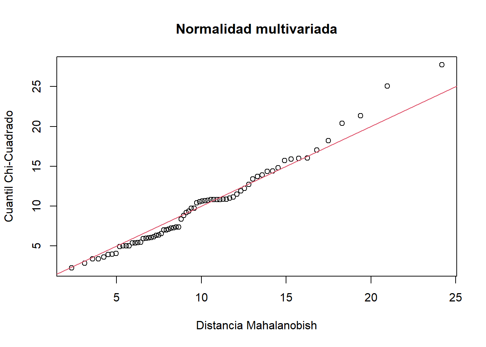
Figura 15: Figura qqplot entre los residuales observados (Distancia Mahalanobish) y los cuantiles chi cuadrado (estimados).
3.2. Supuesto de independencia
Se utilizará el estadístico Durbin Watson (DW) el cual demuestra que se cumple la independencia (valor p > 0.05).
Código
# Prueba de Independencia - Estadistico Durbin Watsonattach(peces)modelo<-lm(M.1+M.2+M.3+M.4+M.5+M.6+M.7+M.13+M.15+M.18~Especie)durbinWatsonTest(modelo)
lag Autocorrelation D-W Statistic p-value
1 0.08444408 1.80425 0.214
Alternative hypothesis: rho != 0
Paso 4. Prueba a postriori del MANOVA
A continuación, se realizará una figura del análisis discriminante - lda, que permitirá generar definir al nivel de discriminación de cada grupo o especie de pez. Se presentan algunas opciones gráficas con el procedimiento general y con el análisis discriminate canónico (dca)
A continuación se realizará el componente grafico del lda, el cual inicia con una figura que definirá unas elipses, las cuales relacionan a los individuos de cada especie y cuyo solapamiento definirá el nivel de relación entre estas.
Código
# Escores o coordenadas de las observaciones en cada eje can?nicoFp <-predict(dis)$x
Código
# Grupos asignados por el ADgroup<-predict(dis,method="plug-in")$class
Código
# Coordenadas y grupos asignadospeces.coord=data.frame(Especie=group,Fp)
La Figura 16 demuestra que si bien de presenta una buena discriminación de las especies de peces, 4 de las 5 evaluadas presentan cierta relación, definida por el solapamiento de sus elipses.
Código
# Figura del LDAattach(peces)scatterplot(LD2~LD1 | Especie, data=peces.coord,reg.line=FALSE, smooth=F, spread=F,span=1,grid=F,legend=list(coords="bottom"), ellipse=T,font.lab=2, pch=c(15,16,17,18,19),col=c('#fc8d59','#e41a1c','#984ea3','#377eb8','#33a02c'),main="Análisis discriminante",font.main=2,cex.main=2,cex.lab=1.5,xlab="Eje1", ylab="Eje2")
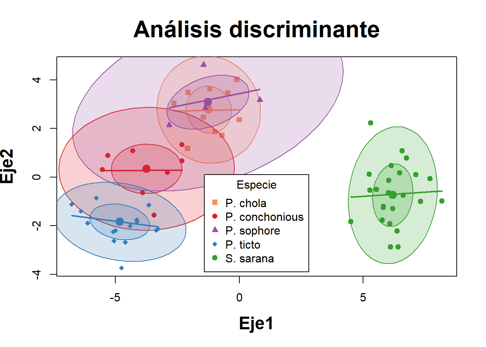
Figura 16: Mapa de calor que relaciona a las variables morfométricas y a las especies de peces.
Taller 10. MANOVAS PERMUTACIONALES - PERMANOVAS
Objetivo de la actividad:
La base de datos que se utilizará es la de medidas morfométricas de peces de un estudio realizado con peces de la india por Gupta et al. (2018)Articulo fuente en los que se validó la taxonomía de peces de la subfamilia Barbinae, utilizando 19 variables morfométricas y 19 variables meristicas, correspondientes a 5 Especie de la familia en mención.
Imágen tomada de Gupta et al. (2018) (a) S . Sarana (b) P . ticto (c) P . sóforo , (d) P . conconio y (e) P . chola
El objetivo de este ejercicio consiste evaluar la variación morfométrica que se presenta en los peces de cada especie (grupos en comparación), para conocer si los atributos morfométricos generan diferencias en cada grupo evaluado, basado en pruebas de varianza no paramétricos. La base de datos que se utilizará es datos.xlsx.
Cargar o importar la base de datos
La presente base de datos se encuentra en formato plano de csv, presenta una columna Especie que agrupa a las 5 Especie de peces, otra columna Grupo, que asigna un número a cada especie y posteriormente a las 19 variables morfométricas y 10 variables meristicas, de las cuales se selecionarán las 10 morfométricas para este ejercicio M.1 a M.7, M.13 a M.15 y M.18.
Código
# Base de datospeces<-read_xlsx("datos.xlsx")# names(peces)
Exploración de los datos
Figura de cajas por cada variable morfométrica
La Figura 17 permite visualizar la resolución de cada variable para diferenciar o discriminar a las diferentes especies de peces. Esta figura sirve de insumo para descartar aquellas variables con poco potencial de discriminación de las especies.
Código
# Figuras multivariadas de Cajas y bigoteslibrary(reshape)ggplot(melt(peces[,c(2,4:10,16,18,21)]), aes(x=variable, y=value)) +geom_boxplot(aes(fill=Especie)) +scale_fill_manual(values =c('#fc8d59','#ffffbf','#99d594','#377eb8','#33a02c')) +labs(x="",y="Morfometría") +facet_wrap(~ variable,scales="free") +theme_bw()
Figura 17: Variación en la morfometría de los peces, de acuerdo a cada una de las variables seleccionadas.
Figura del lda para comparar a las especies de peces
A continuación, se realizará una figura del análisis discriminante - lda, que permitirá generar definir al nivel de discriminación de cada grupo o especie de pez. Se presentan algunas opciones gráficas con el procedimiento general y con el análisis discriminate canónico (dca)
A continuación se realizará el componente grafico del lda, el cual inicia con una figura que definirá unas elipses, las cuales relacionan a los individuos de cada especie y cuyo solapamiento definirá el nivel de relación entre estas.
Código
# Escores o coordenadas de las observaciones en cada eje can?nicoFp <-predict(dis)$x
Código
# Grupos asignados por el ADgroup<-predict(dis,method="plug-in")$class
Código
# Coordenadas y grupos asignadospeces.coord=data.frame(Especie=group,Fp)
La Figura 18 demuestra que si bien de presenta una buena discriminación de las especies de peces, 4 de las 5 evaluadas presentan cierta relación, definida por el solapamiento de sus elipses.
Código
# Figura del LDAattach(peces)scatterplot(LD2~LD1 | Especie, data=peces.coord,reg.line=FALSE, smooth=F, spread=F,span=1,grid=F,legend=list(coords="bottom"), ellipse=T,font.lab=2, pch=c(15,16,17,18,19),col=c('#fc8d59','#e41a1c','#984ea3','#377eb8','#33a02c'),main="Análisis discriminante",font.main=2,cex.main=2,cex.lab=1.5,xlab="Eje1", ylab="Eje2")
Figura 18: Mapa de calor que relaciona a las variables morfométricas y a las especies de peces.
Permanova 1. Análisis de similitudes multivariadas - ANOSIM
Paso 1. Distancia entre las observaciones
Se utilizará la distancia euclídea, debido a las relaciones lineales que existen entre las variables morfométricas.
Código
# Distancia Euclídea con las 10 variables seleccionadaspeces.dist<-dist(peces[,c(3:9,15,17,20)],"euclid")# round(peces.dist, 2)
Paso 2. Prueba de hipótesis multivariada con el ANOSIM
ANOSIM statistic = representa al estadístico de Clarc (R). Como R > 0 (= 0.82) indica que hay fuertes diferencias entre las especies de peces, basado en su morfometría.
Significance: 0.0009, indica que las diferencias entre los grupos son altamente significativas (significancia de la permutación).
Disimilarity ranks: Rangos de similitud entre y dentro de los grupos de Especies a diferentes percentiles (ver la siguiente figura que se muestra a continuación). De esta manera se reportan los resultados del estadístico MRPP: (R= 0.83, n= 70, p = 0.00099).
Call:
anosim(x = peces.dist, grouping = peces$Especie, permutations = 1000)
Dissimilarity: euclidean
ANOSIM statistic R: 1
Significance: 0.000999
Permutation: free
Number of permutations: 1000
Upper quantiles of permutations (null model):
90% 95% 97.5% 99%
0.0454 0.0579 0.0705 0.0834
Dissimilarity ranks between and within classes:
0% 25% 50% 75% 100% N
Between 576 1035.750 1496.25 1955.375 2414.5 1840
P. chola 5 73.125 256.75 427.500 538.5 66
P. conchonious 18 257.500 363.50 442.125 545.0 28
P. sophore 35 260.000 468.00 542.000 575.0 15
P. ticto 5 141.000 305.00 463.500 571.0 190
S. sarana 11 145.250 269.50 406.250 573.0 276
La figura es una gráfica de cajas y bigotes con muescas que visualiza la comparación de medianas generadas por las 1000 permutaciones, para comparar a las cinco especies de peces, entre y dentro de los grupos formados priori. De acuerdo con esta figura, todos los grupos son diferentes entre sí (sus cinturas o muescas no se solapan horizontalmente con la de la primera caja).
Código
# Figura del Anosimplot(peces.anosim,las=1, col="#fc8d59", ylab="Rangos de distancia",xlab="Especies")
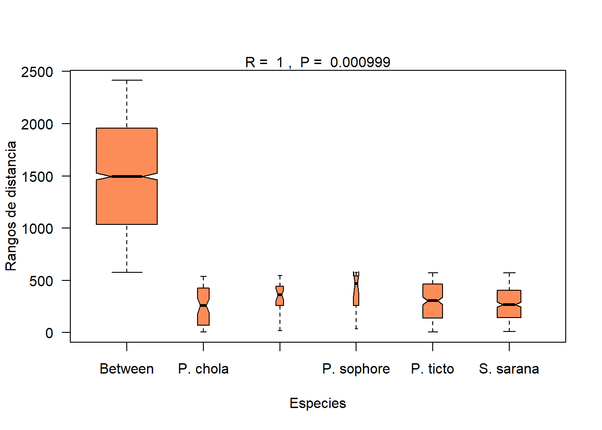
Permanova 2. Permutación multirespuesta - MRPP
Paso 1. Distancia entre las observaciones
Se utilizará la distancia euclídea calculada para el anterior ANOSIM.
Código
# Distancia Euclídea con las 10 variables seleccionadaspeces.dist<-dist(peces[,c(3:9,15,17,20)],"euclid")# round(peces.dist, 2)
Paso 2. Prueba de hipótesis multivariada con el MRPP
Class means and counts: Corresponde al estadístico delta del MRPP (δ), evaluados para cada grupo o especie de pez, que muestra un nivel bajo de correlación intragrupo (Pearson tipo III de 0.16).
Delta observado (0.16) < delta esperado por permutación (0.28), con lo que la diferenciación entre las cinco especies de peces es altamente significativo (p-valor: 0.0009). En este sentido se determina que las especies son diferentes en su morfología. De esta manera se reportan los resultados del estadístico MRPP: (MRPP= 0.16, n= 70, p = 0.00099).
Código
# Prueba de hipótesis de diferencias en los grupos de Especies, mediante el MRPPpeces.mrpp <-mrpp(peces.dist, peces$Especie, permutations=1000)peces.mrpp
Call:
mrpp(dat = peces.dist, grouping = peces$Especie, permutations = 1000)
Dissimilarity index: euclidean
Weights for groups: n
Class means and counts:
P. chola P. conchonious P. sophore P. ticto S. sarana
delta 0.1174 0.1445 0.181 0.1343 0.1288
n 12 8 6 20 24
Chance corrected within-group agreement A: 0.9177
Based on observed delta 0.1347 and expected delta 1.636
Significance of delta: 0.000999
Permutation: free
Number of permutations: 1000
Permanova 3. PERMANOVA de un factor (Especies de peces)
Este es el análisis más similar al MANOVA o análisis de varianza multivariado, pero la construcción de la tabla del MANOVA la hace mediante permutaciones, comparando a la matriz de distancias de los datos observados con otra matriz de distancia estimada por permutaciones.
Paso 1. Distancia entre las observaciones
Se utilizará la distancia euclídea calculada para el anterior ANOSIM y el MRPP, pero transformando las variables con logaritmo base 10, para mejorar su linealización de los datos.
Código
# Distancia Euclídea con las 10 variables seleccionadaspeces.dist1 <-dist (log10(peces[,c(3:9,15,17,20)+1]),"euclid")# round(peces.dist, 2)
Paso 2. Prueba de hipótesis multivariada con el PERMANOVA
Similar a las pruebas anteriores, este PERMANOVA permite probar que existen diferencias marcadas en la morfometría de los individuos que se agrupan en las cinco especies de peces (valor p < 0.05). De esta manera se reportan los resultados del estadístico MRPP: (Seudo F= 12.5, g.l= 4 y 65, p = 0.00099***).
library(flextable)
library(tidyverse)
Código
# Instalar si no la tienes# install.packages("flextable")# Cargarlibrary(flextable)# PERMANOVAlibrary(vegan)peces.dist1 <-dist (log10(peces[,c(3:9,15,17,20)+1]),"euclid")peces.permanova <-adonis2(peces.dist1 ~ peces$Especie, perm=1000)#peces.permanovadata.frame(Fuente=c("Factor","Error","Total"),df=peces.permanova$Df,SC=peces.permanova$SumOfSqs,R2=peces.permanova$R2,Statistic=peces.permanova$F,p=peces.permanova$'Pr(>F)') %>%flextable()
Fuente
df
SC
R2
Statistic
p
Factor
4
3.268732
0.5207018
17.65374
0.000999001
Error
65
3.008818
0.4792982
Total
69
6.277550
1.0000000
Paso 3. Efecto de las variables morfométricas en la diferenciación de los grupos
Los resultados de este análisis, permiten definir, que con excepción de las variables M.13 y M.18, todas presentan un efecto significativo en la diferenciación de las especies de peces.
Pairwise comparisons using permutation MANOVAs (test: Pillai)
data: peces[, c("M.1", "M.2", "M.3", "M.4", "M.5", "M.6", "M.7", "M.13", by peces$Especie
999 permutations "M.15", "M.18")] by peces$Especie
999 permutations
P. chola P. conchonious P. sophore P. ticto
P. conchonious 0.02 - - -
P. sophore 1.00 0.04 - -
P. ticto 0.01 0.01 0.01 -
S. sarana 0.01 0.01 0.01 0.01
P value adjustment method: bonf